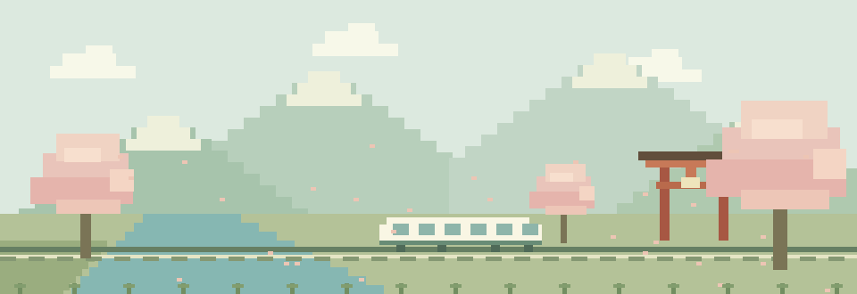

A LITTLE ADVENTURE IN JAPAN
東北，
下一場冒險。
把旅途的小事，收進像素裡。
2027.04.19 — 04.2810 天 9 夜規劃中

TOHOKU QUEST 春の旅START 仙台·················· → ··················青森 & 東北········ →RETURN 仙台
YOUR TRAVEL LOG
A LITTLE ADVENTURE IN JAPAN
把旅途的小事，收進像素裡。

TOHOKU QUEST 春の旅YOUR TRAVEL LOG